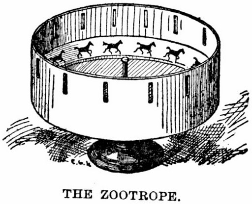
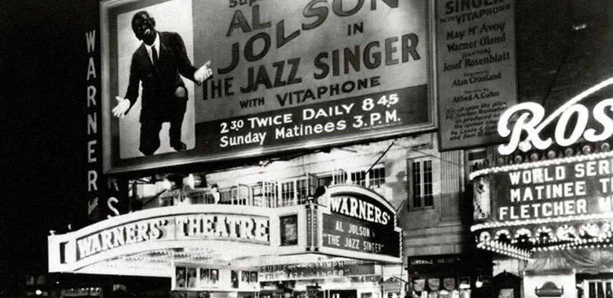
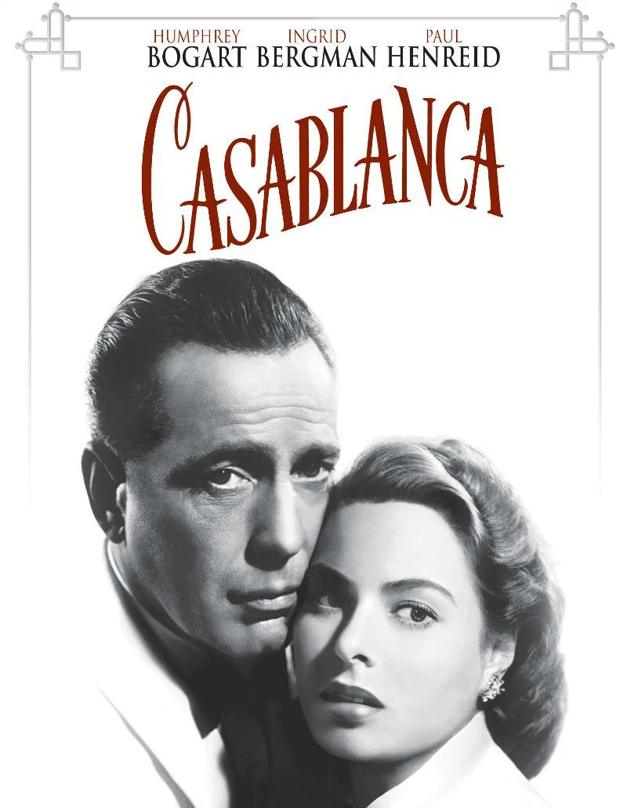
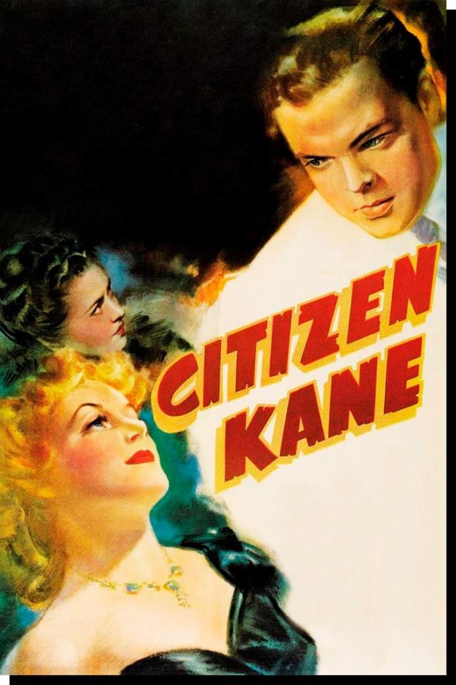
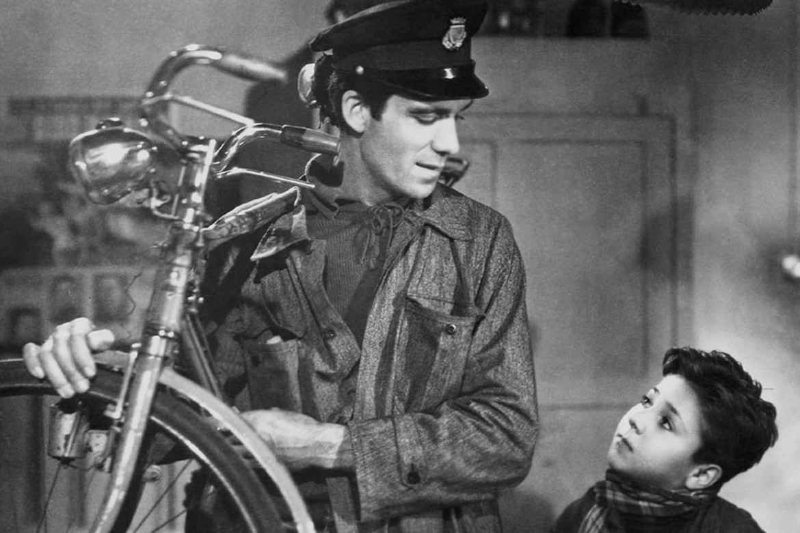
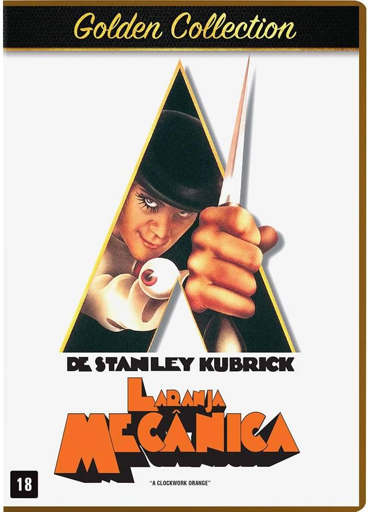
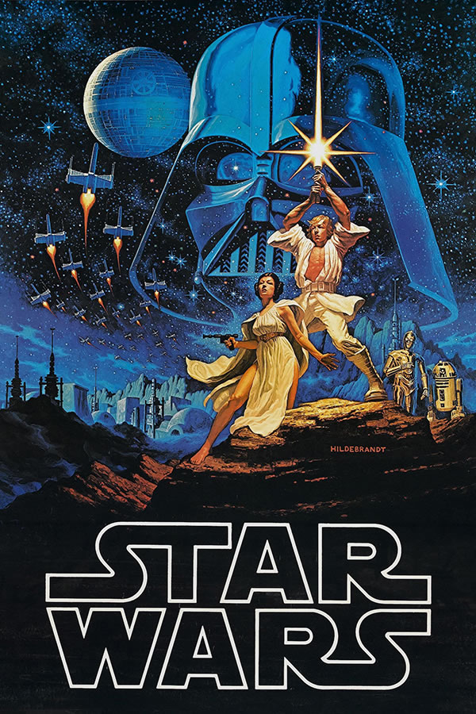
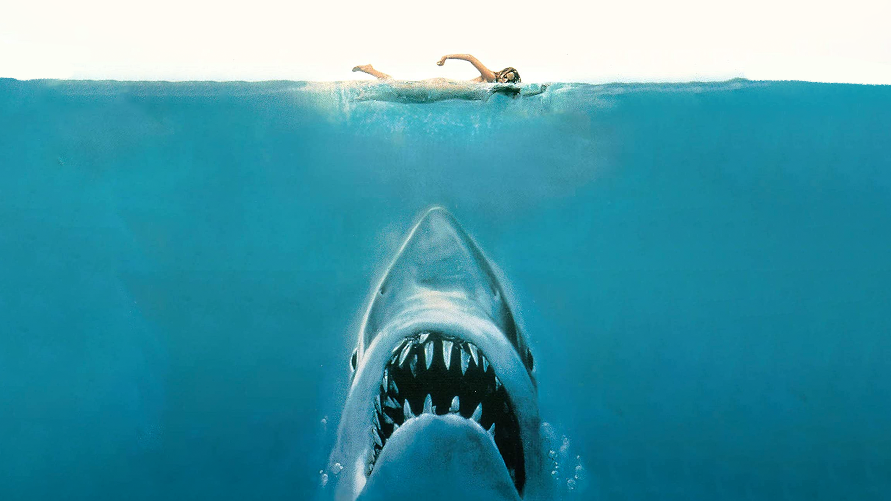

A História do Cinema: Da Invenção à Era Digital
Origens do Cinema (Final do século XIX)
A história do cinema começa com a combinação de duas grandes invenções: a fotografia e os dispositivos ópticos que criavam a ilusão de movimento.
- Dispositivos Pré-Cinema: Taumatroscópio (1824), Fenaquistoscópio (1832), Zootroscópio (1834)
- Fotografia em Movimento: Eadweard Muybridge (1878), Cinetoscópio de Edison (1891), Cinematógrafo dos Irmãos Lumière (1895)

Cinema Mudo (1895 – 1927)
Filmes sem som sincronizado, com atuações expressivas e trilhas musicais ao vivo.
- Georges Méliès – "Viagem à Lua" (1902)
- D.W. Griffith – "O Nascimento de uma Nação" (1915)
- Charlie Chaplin – "O Garoto" (1921), "Tempos Modernos" (1936)
A Chegada do Som (1927 – anos 1930)
Com "O Cantor de Jazz" (1927), os filmes passam a ter áudio sincronizado, revolucionando o cinema.

Era de Ouro de Hollywood (1930 – 1950)
Grandes estúdios dominam a produção. Surgem os gêneros clássicos e os primeiros filmes coloridos.
- "...E o Vento Levou" (1939)
- "Casablanca" (1942)
- "Cidadão Kane" (1941)


Cinema Pós-Guerra e Neorrealismo Italiano (anos 1940 – 1950)
Produções mais realistas, sociais e humanas, filmadas em locações reais.
- "Ladrões de Bicicleta" (1948) – Vittorio De Sica

Nova Hollywood e o Cinema de Autor (anos 1960 – 1970)
Cineastas conquistam liberdade criativa, criando obras ousadas e marcantes.
- Scorsese – "Taxi Driver"
- Coppola – "O Poderoso Chefão"
- Kubrick – "Laranja Mecânica"
- Lucas – "Star Wars"



Cinema Blockbuster (anos 1980 – 1990)
Filmes com grandes orçamentos, campanhas publicitárias massivas e forte apelo popular.
- "Tubarão" (1975), "Star Wars" (1977), "Indiana Jones", "Titanic" (1997)

Cinema Digital e Inovações Tecnológicas (anos 2000 – hoje)
Uso de câmeras digitais, CGI, e plataformas de streaming mudam o cenário da produção e consumo.
- "Avatar" (2009)
- Popularização de Netflix, Amazon Prime, Disney+
- Realidade virtual, interatividade, diversidade
O Futuro do Cinema
Com novas tecnologias e hábitos de consumo, o cinema segue se transformando entre salas e plataformas digitais, sempre buscando novas formas de contar histórias.